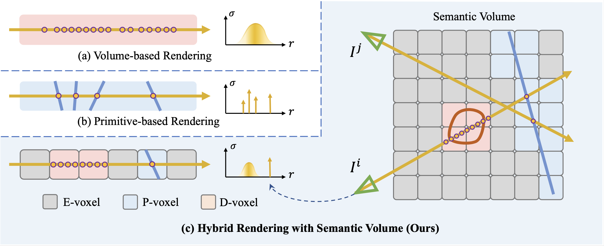
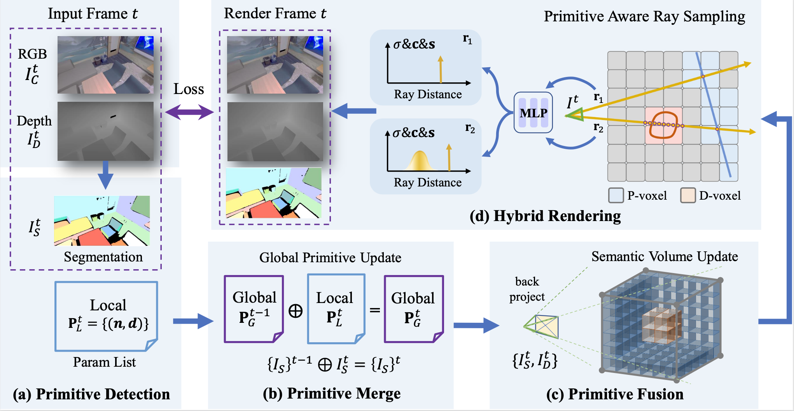
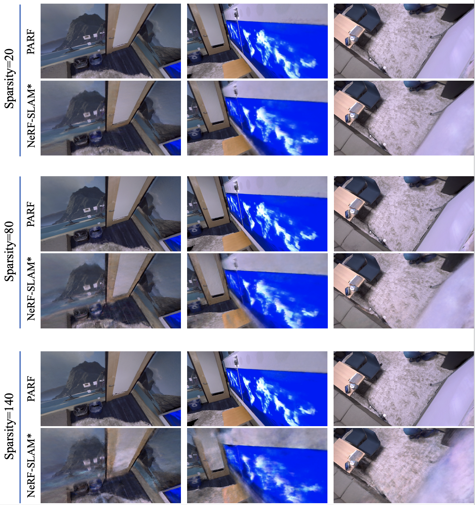
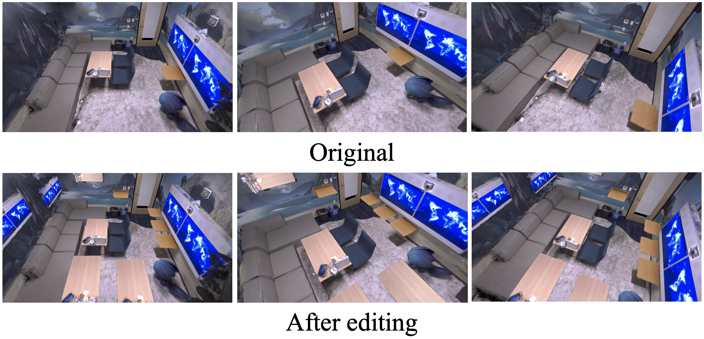

We present PARF, Primitive-Aware Radiance Fusion for Indoor Scene Novel View Synthesis, which enables both efficient and high-quality rendering in general indoor scenes. Standard volume based rendering methods like NeRF can model complex scenes but suffer from heavy sampling and ambiguous geometry. Primitive based rendering methods like NeurMips enjoys fast rendering but have difficulty representing complex geometric.
Representation

We propose a novel hybrid representation to take advantage of both kinds of methods. Specifically, we represent the scene with a semantic volume, which consists three kinds of voxels with different sampling strategy. D-voxels we simply use dense sampling like nerf, while for P-voxels we apply sparse primitive aware sampling strategy. Besides, we simply skip sampling within E-voxels.
Framework

we show the optimization framework for incremental radiance reconstruction. Given each RGBD image as input, we first detect primitives such as planes. Then we merge the detected new primitives into a global primitive list. Next, we back project the semantic frame into a 3D semantic volume to update the global semantic state. After that, primitive aware hybrid rendering is applied to render RGB values, depth values as well as semantic values which are supervised by the input frames.
Incremental Performance
We provide performance comparison between PARF and NeRF-SLAM which is in depth supervised version of InstantNGP. Notice our PARF enjoys much faster convergence with the help of primitive-aware hybrid representation.
Replica Office_0
Replica Office_2
Replica Room_0
Extropolation Performance
We also show the extrapolation ability of our method. Note that under extrapolation views, PARF shows robust rendering results with the help of primitive-aware representation, while NeRF-SLAM shows blurry rendering results due to the ambiguous geometry.
Replica Office_0
Replica Office_2
Replica Room_0
BundleFusion apt0
Real-time Interaction and Rendering
We show that our method is capable of real-time rendering and interactions.
Replica Office_0
Replica Office_2
Sparse Reconstruction
Given only sparse view as input, PARF shows robust rendering performance thanks to the primitive based hybrid representation.

Scene Editing
Our primitive-aware hybrid representation also enables convenient scene editing.

Semantic Label Super-Resolution
Low-resolution labelling from light-weight CNNs or manual annotations are less costly to acquire than high-resolution ones.
By supervising Semantic-NeRF with only low-resolution labels, we can accurately super-resolve input labels.
Note that either coarse or sparse training labels use the same amount of information from low-resolution label maps.
(Sparse labels have been zoomed-in 4 times for the ease of visualisation.)
Replica Office_3 Coarse
Replica Office_3 Sparse
ScanNet Scene0088_00 Coarse
ScanNet Scene0088_00 Sparse
Label Propagation (Interactive Segmentation)
Inspired by the success of label super-resolution, practical interactive annotation from users in form of clicks, strokes or scratches are desirable.
We show that these partial labels can also be propagated to dense scene labelling by Semantic-NeRF.
Even single click per class/frame leads to very competitive semantic rendering of the whole scene.
(Single click labels below have been zoomed-in 9 times for the ease of visualisation.)
Replica Room_0 Single-Click
Replica Room_0 1% Label
Replica Room_0 5% Label
Semantic 3D Reconstruction from Posed Images
Explicit 3D meshes can be extracted from Semantic-NeRF by querying the MLP on dense grids within the scene, and then applying marching cubes. Attached semantic texture is rendered by treating the negative normal direction of mesh vertices as the ray marching direction during volume rendering. Note that Semantic-NeRF is able to predict decent geometry and semantics even in occluded regions (e.g., areas behind the sofa) and fill the holes to some extent in unobserved regions.
Reconstructed mesh of Replica Room_0 with 2563 grids.
Conclusion
We have shown that adding a semantic output to a scene-specific implicit MLP model of geometry and appearance
means that complete and high resolution semantic labels can be generated for a scene when only partial, noisy or
low-resolution semantic supervision is available. This method has practical uses in robotics or other applications
where scene understanding is required in new scenes where only limited labelling is possible.
An interesting direction for future research is interactive labelling, where the continually
training network asks for the new labels which will most resolve semantic ambiguity for the whole scene.
Paper